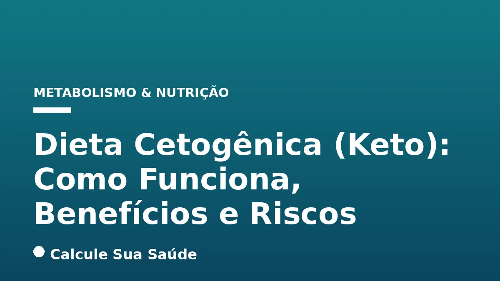

Aviso médico importante
Este conteúdo é educativo e informativo e não substitui a consulta, o diagnóstico ou o tratamento de um profissional de saúde. Em caso de sintomas, procure orientação médica.
Índice do Artigo
- 1. O Que é a Dieta Cetogênica (Keto)? Definição e Princípios Fundamentais
- 2. O Mecanismo da Cetose Nutricional: Como o Corpo se Adapta
- 3. Cetose Nutricional vs. Cetoacidose: Entendendo a Diferença Crucial
- 4. Fatores de Risco e Contraindicações da Dieta Cetogênica
- 5. A 'Gripe Keto': Sintomas Comuns na Transição para a Cetose
- 6. Como Confirmar o Estado de Cetose: Métodos de Medição
- 7. A Dieta Cetogênica no Tratamento da Epilepsia Refratária
- 8. Dieta Cetogênica e Perda de Peso: Evidências e Limitações
- 9. Impacto da Dieta Cetogênica no Diabetes Tipo 2
- 10. Potenciais Benefícios em Doenças Neurodegenerativas e Neurológicas
- 11. Mitos e Verdades Sobre a Dieta Cetogênica
- 12. Planejamento e Supervisão para uma Dieta Cetogênica Segura
- 13. Considerações sobre o Colesterol e Saúde Cardiovascular
- 14. Desafios e Sustentabilidade a Longo Prazo da Dieta Cetogênica
- 15. Dieta Cetogênica para Populações Específicas: Veganismo e Atletas
- 16. Dados Epidemiológicos e a Relevância no Contexto Brasileiro
- 17. Perguntas frequentes
A dieta cetogênica, popularmente conhecida como dieta keto, representa um plano alimentar que tem ganhado destaque por sua abordagem radical na restrição de carboidratos, priorizando a ingestão de gorduras e uma quantidade moderada de proteínas. Seu principal objetivo é induzir um estado metabólico específico chamado cetose, onde o corpo passa a utilizar a gordura como sua principal fonte de energia.
Este artigo, elaborado com base em evidências científicas e o rigor editorial do Calcule Sua Saúde, explora em profundidade os mecanismos da dieta cetogênica, seus benefícios comprovados em diversas condições de saúde, os potenciais riscos e contraindicações, além de desmistificar crenças comuns. É crucial compreender que, por ser uma intervenção nutricional com impactos metabólicos significativos, a dieta cetogênica deve ser sempre implementada sob estrita supervisão de profissionais de saúde qualificados.
Nosso compromisso é fornecer informações claras, precisas e atualizadas, capacitando você a tomar decisões informadas sobre sua saúde. Lembre-se que este conteúdo é educativo e não substitui a avaliação e o acompanhamento médico ou nutricional individualizado.
Em resumo
- A dieta cetogênica é um plano alimentar com baixíssima ingestão de carboidratos, moderada em proteínas e alta em gorduras, visando induzir a cetose nutricional.
- Na cetose, o corpo utiliza corpos cetônicos, derivados da gordura, como principal fonte de energia, especialmente para o cérebro.
- É fundamental diferenciar cetose nutricional (segura e controlada) de cetoacidose (emergência médica grave, comum em diabetes tipo 1 não controlada).
- A dieta cetogênica é um tratamento estabelecido para epilepsia refratária em crianças e mostra evidências promissoras para perda de peso e controle do diabetes tipo 2, sempre com supervisão.
- A transição para a cetose pode causar a 'gripe keto', com sintomas temporários como fadiga e dor de cabeça.
- Muitos mitos cercam a dieta keto; é essencial focar na qualidade dos alimentos, na supervisão profissional e na sustentabilidade a longo prazo.
1. O Que é a Dieta Cetogênica (Keto)? Definição e Princípios Fundamentais
A dieta cetogênica, ou dieta keto, é um padrão alimentar caracterizado por uma ingestão extremamente baixa de carboidratos, uma quantidade moderada de proteínas e uma alta proporção de gorduras. Seu objetivo primordial é alterar o metabolismo do corpo, induzindo um estado conhecido como cetose nutricional. Nesse estado, o organismo, com acesso limitado à glicose – sua fonte de energia preferencial derivada dos carboidratos – passa a queimar gordura como seu principal combustível. Essa gordura é então convertida em moléculas chamadas corpos cetônicos, que servem como uma fonte alternativa e eficiente de energia para o cérebro, coração e músculos.
Para alcançar a cetose, a restrição de carboidratos é rigorosa, geralmente limitada a menos de 50 gramas por dia, e em alguns protocolos, até menos. A distribuição de macronutrientes em uma dieta cetogênica padrão é aproximadamente 75% das calorias provenientes de gorduras, 20% de proteínas e apenas 5% de carboidratos. Existem variações, como a dieta cetogênica rica em proteínas, onde a proporção de proteínas pode chegar a 30% das calorias totais, mas a essência da restrição de carboidratos permanece.
2. O Mecanismo da Cetose Nutricional: Como o Corpo se Adapta
A cetose nutricional é um estado metabólico adaptativo que ocorre quando a ingestão de carboidratos é drasticamente reduzida. Em condições normais, a glicose é a principal fonte de energia do corpo. No entanto, quando a glicose se torna escassa, o fígado inicia um processo chamado cetogênese. Durante a cetogênese, as gorduras armazenadas e as gorduras dietéticas são quebradas em ácidos graxos, que são então convertidos em corpos cetônicos: beta-hidroxibutirato, acetoacetato e acetona.
Esses corpos cetônicos são liberados na corrente sanguínea e transportados para várias células e tecidos, incluindo o cérebro, onde podem ser utilizados como combustível. O cérebro, que normalmente depende quase exclusivamente da glicose, é capaz de se adaptar para usar corpos cetônicos de forma eficiente, o que pode ter implicações importantes para a função cognitiva e em certas condições neurológicas. Essa mudança metabólica é a base dos potenciais benefícios terapêuticos da dieta cetogênica.
3. Cetose Nutricional vs. Cetoacidose: Entendendo a Diferença Crucial
É fundamental distinguir entre cetose nutricional e cetoacidose, pois são condições metabolicamente distintas e com implicações de saúde muito diferentes. A falta de clareza sobre essa distinção é uma fonte comum de preocupação e desinformação sobre a dieta cetogênica.
- Cetose Nutricional: É um estado metabólico fisiológico e controlado, induzido pela restrição de carboidratos. Os níveis de corpos cetônicos no sangue permanecem em uma faixa segura (geralmente entre 0,5 e 3 mmol/L). O corpo se adapta a usar cetonas como combustível sem causar desequilíbrio ácido-base significativo. É o estado almejado na dieta cetogênica e, sob supervisão, é geralmente considerado seguro para indivíduos saudáveis.
- Cetoacidose: É uma emergência médica grave e potencialmente fatal, caracterizada por níveis excessivamente elevados de corpos cetônicos no sangue (acima de 15-20 mmol/L), levando a uma acidificação perigosa do sangue (acidose metabólica). A cetoacidose ocorre principalmente em indivíduos com diabetes tipo 1 não controlada, onde há uma deficiência severa de insulina, impedindo que a glicose entre nas células e que o corpo regule a produção de cetonas. Também pode ocorrer em casos de alcoolismo severo ou jejum prolongado extremo, mas é rara em indivíduos saudáveis seguindo uma dieta cetogênica bem planejada.
A supervisão médica é crucial para garantir que a cetose nutricional seja alcançada de forma segura e para monitorar qualquer sinal de complicação, especialmente em populações vulneráveis.
4. Fatores de Risco e Contraindicações da Dieta Cetogênica
A dieta cetogênica não é universalmente adequada e possui fatores de risco e contraindicações importantes que exigem avaliação médica rigorosa. É imperativo que qualquer pessoa considerando iniciar esta dieta procure aconselhamento e supervisão de um profissional de saúde qualificado, como um médico ou nutricionista.
Entre os grupos para os quais a dieta cetogênica não é recomendada ou deve ser abordada com extrema cautela, incluem-se:
- Problemas Hepáticos e Renais: O fígado é o principal local de produção de corpos cetônicos, e os rins são responsáveis pela excreção. Condições preexistentes nestes órgãos podem ser agravadas.
- Doenças Cardíacas: Embora alguns estudos mostrem benefícios, a dieta pode impactar os níveis de colesterol em certas pessoas, exigindo monitoramento.
- Gravidez e Amamentação: Não há evidências suficientes sobre a segurança e os efeitos a longo prazo da dieta cetogênica para o desenvolvimento fetal e infantil.
- Diabetes: Pacientes com diabetes, especialmente aqueles que utilizam insulina ou outros medicamentos hipoglicemiantes, correm um risco elevado de hipoglicemia (níveis perigosamente baixos de açúcar no sangue) se a dieta não for rigorosamente monitorada e os medicamentos ajustados. O risco de cetoacidose também é uma preocupação em diabéticos tipo 1.
- Distúrbios Alimentares: A natureza restritiva da dieta pode ser prejudicial para indivíduos com histórico de distúrbios alimentares.
- Outras Condições Específicas: Incluem deficiências enzimáticas raras que afetam o metabolismo de gorduras, porfiria e deficiência primária de carnitina.
A avaliação individual é essencial para determinar a segurança e a adequação da dieta cetogênica.
5. A 'Gripe Keto': Sintomas Comuns na Transição para a Cetose
Ao iniciar a dieta cetogênica e durante a transição para o estado de cetose, muitas pessoas experimentam um conjunto de sintomas temporários, frequentemente referidos como a “gripe keto” ou “gripe cetogênica”. Esses sintomas são uma resposta do corpo à adaptação de sua principal fonte de combustível, da glicose para as gorduras e corpos cetônicos. A duração e a intensidade da gripe keto variam de pessoa para pessoa, mas geralmente duram de alguns dias a algumas semanas.
Os sintomas comuns da gripe keto incluem:
- Fadiga e Letargia: Sensação de cansaço extremo e falta de energia.
- Dor de Cabeça: Muitas vezes descrita como uma dor de cabeça tensional.
- Náuseas e Vômitos: Podem ocorrer, especialmente nos primeiros dias.
- Confusão Mental ou “Névoa Cerebral”: Dificuldade de concentração e clareza mental.
- Irritabilidade: Mudanças de humor e aumento da irritabilidade.
- Aumento da Sede e da Vontade de Urinar: Devido à perda de eletrólitos e água.
- Boca Seca: Consequência da desidratação e alterações eletrolíticas.
- Insônia: Dificuldade em adormecer ou manter o sono.
- Alterações Digestivas: Diarreia ou constipação são comuns.
- Mau Hálito: Causado pela acetona, um dos corpos cetônicos, que é exalada.
A hidratação adequada e a reposição de eletrólitos (sódio, potássio, magnésio) podem ajudar a aliviar esses sintomas. A supervisão profissional é importante para gerenciar esses efeitos e garantir que não há complicações mais sérias.
6. Como Confirmar o Estado de Cetose: Métodos de Medição
Para aqueles que seguem a dieta cetogênica, é importante ter certeza de que o corpo realmente entrou em estado de cetose nutricional. A confirmação da cetose pode ser feita através da medição dos níveis de corpos cetônicos no corpo. Existem diferentes métodos disponíveis, cada um com suas particularidades:
- Medição de Cetonas no Sangue: Considerado o método mais preciso e confiável. Utiliza um medidor de cetonas no sangue, similar a um glicosímetro, que mede o beta-hidroxibutirato, o principal corpo cetônico no sangue. Concentrações acima de 0,5 mmol/L são geralmente consideradas indicativas de cetose nutricional.
- Medição de Cetonas na Urina: Tiras reativas de urina podem detectar o acetoacetato. São mais acessíveis e fáceis de usar, mas menos precisas, pois os níveis de cetonas na urina podem não refletir fielmente os níveis sanguíneos, especialmente após a adaptação à dieta. Além disso, a hidratação pode diluir a urina e alterar os resultados.
- Medição de Cetonas no Hálito: Dispositivos portáteis podem medir a acetona no hálito. Este método é não invasivo, mas a precisão pode variar.
A escolha do método depende da preferência pessoal e da necessidade de precisão. Para a maioria das pessoas, a observação dos sintomas da gripe keto e a medição ocasional podem ser suficientes para confirmar a entrada em cetose. No entanto, em contextos clínicos ou para condições específicas como a epilepsia, a medição sanguínea é preferível para um monitoramento mais rigoroso.
7. A Dieta Cetogênica no Tratamento da Epilepsia Refratária
Um dos usos mais antigos e bem estabelecidos da dieta cetogênica é no tratamento da epilepsia refratária, especialmente em crianças. Para pacientes cujas convulsões não são controladas por medicamentos anticonvulsivantes, a dieta cetogênica clássica tem demonstrado ser uma intervenção terapêutica eficaz, muitas vezes sob a supervisão de uma equipe multidisciplinar.
Revisões sistemáticas da Cochrane indicam que crianças submetidas a dietas cetogênicas podem ter até três vezes mais chances de alcançar a liberdade de crises e até seis vezes mais chances de experimentar uma redução de 50% ou mais na frequência das crises, em comparação com o tratamento usual. Em um estudo, mais da metade das crianças em dieta cetogênica clássica ficaram livres de crises após três meses. Para adultos, a evidência é menos conclusiva, mas ainda sugere uma possível redução de 50% ou mais na frequência das crises em até cinco vezes mais chances. A certeza da evidência é considerada baixa a muito baixa devido ao pequeno número de participantes e métodos dos estudos, mas o consenso clínico sobre sua eficácia em casos refratários é forte.
Os mecanismos exatos pelos quais a dieta cetogênica atua na epilepsia ainda estão sendo investigados, mas acredita-se que os corpos cetônicos e as mudanças metabólicas associadas (como a modulação de neurotransmissores e a melhora da bioenergética cerebral) desempenhem um papel neuroprotetor e anticonvulsivante. Para mais informações sobre condições neurológicas, veja nosso artigo sobre Enxaqueca: Gatilhos, Tipos, Crise e Tratamentos.
8. Dieta Cetogênica e Perda de Peso: Evidências e Limitações
A dieta cetogênica ganhou grande popularidade como uma estratégia para a perda de peso. Estudos sugerem que ela pode levar a uma perda de peso mais rápida e eficiente a curto prazo em comparação com dietas de baixo teor de gordura. Uma revisão sistemática e meta-análise de ensaios clínicos randomizados indicou que dietas cetogênicas podem produzir uma pequena redução adicional no peso corporal em comparação com dietas com mais carboidratos, sob condições de energia prescrita comparáveis (MD = -1.49 kg; IC 95%: -2.41 a -0.58; p = 0.008).
No entanto, a certeza da evidência é baixa devido à predominância de evidências de curto prazo e incertezas sobre a ingestão de energia e proteínas. A perda de peso inicial é em parte devido à perda de água, que ocorre quando os estoques de glicogênio (que retêm água) são esgotados. Embora a dieta cetogênica possa promover a saciedade e reduzir o apetite, a sustentabilidade a longo prazo é um desafio. Ao abandonar qualquer plano alimentar restritivo, a tendência é que os pacientes recuperem o peso perdido. A chave para a perda de peso sustentável é a aderência a hábitos alimentares saudáveis e equilibrados a longo prazo. Para uma abordagem mais flexível, considere ler sobre Dieta Low Carb: Evidências, Benefícios e Riscos.
9. Impacto da Dieta Cetogênica no Diabetes Tipo 2
A dieta cetogênica tem sido investigada como uma intervenção promissora para o manejo do diabetes tipo 2, uma condição metabólica caracterizada por resistência à insulina e altos níveis de açúcar no sangue. Estudos mostram que a dieta cetogênica pode ser eficaz na melhora do controle glicêmico e na redução da necessidade de medicamentos em pacientes com diabetes tipo 2.
Ao restringir drasticamente os carboidratos, a dieta cetogênica ajuda a estabilizar os níveis de açúcar no sangue e pode melhorar a sensibilidade à insulina. Isso pode levar à redução da hemoglobina glicada (HbA1c), um marcador do controle glicêmico a longo prazo, e à diminuição da dependência de medicamentos para diabetes, incluindo a insulina. No entanto, é crucial que pacientes com diabetes que seguem esta dieta estejam sob supervisão médica rigorosa. O risco de hipoglicemia é significativo, e os ajustes na medicação são frequentemente necessários para evitar complicações. A transição deve ser cuidadosamente gerenciada por um profissional de saúde. Para mais informações sobre o manejo do diabetes, consulte nosso artigo sobre Diabetes Tipo 2: Controle e Reversão.
10. Potenciais Benefícios em Doenças Neurodegenerativas e Neurológicas
Além da epilepsia, há evidências emergentes que sugerem potenciais benefícios da dieta cetogênica em outras doenças neurodegenerativas e neurológicas, como Alzheimer, Parkinson, depressão e enxaqueca. A comunidade científica tem investigado a dieta cetogênica devido a correlações neurofisiológicas em condições como a síndrome da deficiência do transportador de glicose tipo 1, doença de Alzheimer e doença de Parkinson, incluindo estresse oxidativo, neuroinflamação e disfunção mitocondrial.
Acredita-se que a dieta cetogênica possa diminuir o estresse oxidativo e reduzir a neuroinflamação, mecanismos que estão implicados na progressão dessas doenças. Um estudo de 2018 randomizou pessoas com Parkinson para dieta cetogênica ou baixo teor de gordura, avaliando melhorias nos sintomas. A eficácia da dieta cetogênica foi comprovada na epilepsia e em outras doenças neurológicas, como depressão, enxaqueca ou doenças neurodegenerativas, por exemplo, Alzheimer e Parkinson. No entanto, mais pesquisas são necessárias para determinar os efeitos a longo prazo e estabelecer protocolos de tratamento padronizados. Para informações mais detalhadas sobre uma dessas condições, veja nosso artigo sobre Alzheimer: Prevenção, Sintomas e Novos Tratamentos.
11. Mitos e Verdades Sobre a Dieta Cetogênica
A dieta cetogênica, por sua natureza restritiva e popularidade, é cercada por muitos mitos e equívocos. É importante separar o que a ciência diz das crenças populares:
Mito 1: "A dieta cetogênica afeta os rins porque se come muita proteína."
O que a ciência diz: Falso. A dieta cetogênica não é uma dieta hiperproteica. Ela se caracteriza pela restrição de carboidratos (não mais que 50g/dia) e alta ingestão de gorduras (75% a 90% das calorias totais), com proteínas em quantidade moderada (cerca de 20% das calorias). O consumo excessivo de proteínas, sim, pode sobrecarregar os rins em indivíduos com doença renal preexistente, mas isso não é uma característica intrínseca da dieta cetogênica padrão.
Mito 2: "É preciso fazer por pouco tempo porque afeta a saúde."
O que a ciência diz: Verdadeiro (com ressalvas). Qualquer dieta restritiva pode ter efeitos adversos na saúde e deve ser prescrita e supervisionada por um profissional. A sustentabilidade a longo prazo é um desafio, e estudos de longo prazo que garantam a manutenção do peso perdido são limitados. A supervisão é crucial para mitigar riscos.
Mito 3: "É uma das dietas mais efetivas para baixar de peso."
O que a ciência diz: Verdadeiro a curto prazo. A dieta cetogênica parece ter uma vantagem na perda de peso a curto prazo em comparação com dietas tradicionais. No entanto, a perda de peso inicial é em grande parte devido à perda de água. A chave para a perda de peso sustentável é a aderência a hábitos alimentares saudáveis e a criação de um déficit calórico.
Mito 4: "Se abandonar, recupera-se fácil o peso perdido."
O que a ciência diz: Verdadeiro. Ao abandonar qualquer plano alimentar restritivo e retornar aos hábitos alimentares anteriores, a tendência é que os pacientes recuperem o peso perdido, muitas vezes com um "efeito sanfona".
Mito 5: "Pode comer toda a gordura que quiser."
O que a ciência diz: Falso. Embora seja uma dieta rica em gorduras, a qualidade das gorduras é crucial. Gorduras trans ou ultraprocessadas são prejudiciais. A dieta deve focar em gorduras saudáveis como abacate, azeite de oliva, frutos secos e peixes gordurosos. Além disso, o consumo calórico total ainda importa para a perda ou manutenção de peso.
Mito 6: "A cetose é perigosa."
O que a ciência diz: Falso, mas com distinção. A cetose nutricional, um estado metabólico natural e controlado, é diferente da cetoacidose, uma condição médica grave. A cetose nutricional, quando supervisionada, é geralmente segura para a maioria das pessoas saudáveis. A cetoacidose é uma emergência médica, principalmente em diabéticos tipo 1 não controlados.
Mito 7: "Aumenta o colesterol."
O que a ciência diz: Controverso. Alguns estudos indicam que a dieta cetogênica pode causar um aumento nos níveis de colesterol LDL (colesterol "ruim") em algumas pessoas, especialmente se houver alto consumo de gorduras saturadas. No entanto, outros estudos controlados de curto a médio prazo demonstram melhorias em marcadores cardiometabólicos, como redução de triglicerídeos (30-50%) e aumento do HDL-colesterol (10-20%), além de melhora da sensibilidade à insulina e redução da pressão arterial. A qualidade das gorduras consumidas é um fator determinante. Para mais informações, consulte Colesterol e Triglicerídeos: Guia Completo.
Mito 8: "É uma dieta pouco saudável e pobre em fibras."
O que a ciência diz: Falso, se bem planejada. Uma dieta cetogênica saudável prioriza gorduras saudáveis, vegetais ricos em fibras (com baixo teor de carboidratos) e proteínas magras. Embora restrinja cereais e leguminosas, é possível obter fibras de vegetais como folhas verdes, brócolis, couve-flor e algumas frutas com baixo teor de carboidratos. Para entender a importância das fibras, veja nosso artigo sobre Fibras Alimentares: Tipos, Quantidade e Impacto na Saúde.
Mito 9: "Não é apta para veganos."
O que a ciência diz: Falso. Embora desafiadora, é possível seguir uma dieta cetogênica vegana com planejamento adequado, utilizando fontes vegetais de gordura (azeite, abacate, nozes, sementes) e proteína (tofu, tempeh, proteínas vegetais em pó com baixo carboidrato).
Mito 10: "Te faz ganhar massa muscular rapidamente."
O que a ciência diz: Falso. A dieta cetogênica não é ideal para o crescimento muscular, pois os carboidratos desempenham um papel importante na síntese proteica e na recuperação muscular, especialmente em atletas de força. Atletas que buscam hipertrofia devem considerar outras estratégias nutricionais que incluam carboidratos adequados.
12. Planejamento e Supervisão para uma Dieta Cetogênica Segura
Devido à sua natureza restritiva e aos potenciais impactos metabólicos, a dieta cetogênica exige um planejamento cuidadoso e, idealmente, supervisão profissional. Um nutricionista pode ajudar a elaborar um plano alimentar equilibrado que minimize deficiências nutricionais, enquanto um médico pode monitorar a saúde geral e ajustar medicamentos, se necessário.
| Aspecto | Recomendação |
|---|---|
| Qualidade dos Alimentos | Priorizar gorduras saudáveis (azeite de oliva, abacate, nozes, sementes, peixes gordurosos), proteínas magras e vegetais com baixo teor de carboidratos. Evitar gorduras trans, óleos vegetais refinados e alimentos ultraprocessados. |
| Hidratação | Manter uma ingestão adequada de água para prevenir desidratação, especialmente durante a fase inicial da cetose. |
| Eletrólitos | Monitorar e, se necessário, suplementar eletrólitos como sódio, potássio e magnésio, que podem ser perdidos em maior quantidade no início da dieta. |
| Suplementação | Considerar suplementos de vitaminas e minerais sob orientação profissional para evitar deficiências, já que a restrição de grupos alimentares pode comprometer a ingestão de certos nutrientes. |
| Monitoramento | Realizar exames de sangue periódicos para verificar níveis de colesterol, glicose, eletrólitos e função renal/hepática. |
A supervisão médica e nutricional é essencial para garantir que a dieta seja bem planejada, minimizando deficiências de vitaminas e minerais e monitorando o equilíbrio eletrolítico. A qualidade das gorduras consumidas é crucial; deve-se priorizar gorduras saudáveis em vez de gorduras saturadas e processadas.
13. Considerações sobre o Colesterol e Saúde Cardiovascular
A relação entre a dieta cetogênica e os níveis de colesterol é um tópico de debate e pesquisa contínua. Como a dieta é rica em gorduras, surge a preocupação sobre seu impacto na saúde cardiovascular, especialmente em relação ao colesterol LDL (o "colesterol ruim").
Em algumas pessoas, a dieta cetogênica pode, de fato, levar a um aumento nos níveis de colesterol LDL, particularmente se a ingestão de gorduras saturadas for alta. No entanto, outros estudos controlados de curto a médio prazo têm demonstrado resultados mais favoráveis, incluindo uma redução significativa nos triglicerídeos (em 30-50%) e um aumento no HDL-colesterol (o "colesterol bom", em 10-20%). Além disso, a dieta cetogênica pode melhorar a sensibilidade à insulina e reduzir a pressão arterial, fatores que são importantes para a saúde cardiovascular.
A chave para mitigar potenciais riscos e maximizar benefícios reside na qualidade das gorduras consumidas. Priorizar fontes de gorduras monoinsaturadas e poliinsaturadas (como azeite de oliva, abacate, nozes, sementes e peixes ricos em ômega-3) em detrimento de gorduras saturadas de fontes processadas e carnes gordurosas pode influenciar positivamente o perfil lipídico. O monitoramento regular dos níveis de colesterol e outros marcadores cardiometabólicos é fundamental para qualquer pessoa em dieta cetogênica, especialmente aquelas com histórico de doenças cardíacas ou fatores de risco.
14. Desafios e Sustentabilidade a Longo Prazo da Dieta Cetogênica
Embora a dieta cetogênica possa oferecer benefícios significativos a curto e médio prazo para certas condições, sua sustentabilidade a longo prazo apresenta desafios consideráveis. A natureza altamente restritiva da dieta, que exclui muitos alimentos comuns como grãos, leguminosas, a maioria das frutas e vegetais ricos em amido, pode dificultar a adesão para muitas pessoas.
A monotonia alimentar, a dificuldade em socializar em torno da comida e a necessidade de um planejamento rigoroso podem levar à fadiga dietética e ao abandono do plano. Além disso, a restrição de grupos alimentares inteiros pode aumentar o risco de deficiências nutricionais se a dieta não for cuidadosamente planejada e suplementada. Estudos de longo prazo que avaliam os efeitos da dieta cetogênica por muitos anos ainda são limitados, e a maioria das evidências se concentra em períodos mais curtos.
Para que a dieta cetogênica seja uma opção viável, é essencial que o indivíduo esteja altamente motivado e conte com o apoio contínuo de profissionais de saúde para monitorar a saúde, gerenciar os desafios e garantir a adequação nutricional. A flexibilidade e a capacidade de adaptar o plano ao estilo de vida são cruciais para qualquer estratégia alimentar que vise resultados duradouros.
15. Dieta Cetogênica para Populações Específicas: Veganismo e Atletas
A dieta cetogênica, embora desafiadora, pode ser adaptada para populações específicas, como veganos e atletas, com o devido planejamento e supervisão.
Dieta Cetogênica Vegana
Seguir uma dieta cetogênica sendo vegano é possível, mas exige um planejamento ainda mais meticuloso. A eliminação de produtos de origem animal (carne, laticínios, ovos) restringe ainda mais as opções de alimentos ricos em gordura e proteína com baixo carboidrato. Fontes de gordura veganas incluem abacate, azeite de oliva, óleo de coco, nozes, sementes (chia, linhaça, cânhamo) e manteigas de nozes. Para proteínas, tofu, tempeh, seitan (com moderação devido ao carboidrato) e proteínas vegetais em pó com baixo teor de carboidratos são opções. É crucial garantir a ingestão adequada de micronutrientes, como vitamina B12, ferro, cálcio e zinco, que podem ser mais difíceis de obter em uma dieta vegana restritiva.
Dieta Cetogênica para Atletas
Para atletas, a dieta cetogênica pode ser controversa. Enquanto alguns atletas de resistência relatam benefícios na adaptação da gordura como combustível, a maioria dos atletas de força e de alta intensidade pode encontrar dificuldades. Os carboidratos são essenciais para o desempenho em exercícios de alta intensidade, pois fornecem glicose para a produção rápida de ATP. A restrição de carboidratos pode levar à fadiga precoce e comprometer o desempenho e a recuperação muscular. Para atletas que buscam hipertrofia (ganho de massa muscular), a dieta cetogênica geralmente não é a mais indicada, pois os carboidratos desempenham um papel importante na síntese proteica e na reposição de glicogênio. A adaptação cetogênica para atletas deve ser feita com acompanhamento de um nutricionista esportivo para otimizar o desempenho e a saúde.
16. Dados Epidemiológicos e a Relevância no Contexto Brasileiro
No que tange a dados epidemiológicos específicos sobre a prevalência ou adesão à dieta cetogênica no Brasil, as fontes pesquisadas não fornecem informações detalhadas. No entanto, a relevância da dieta cetogênica no contexto brasileiro pode ser inferida a partir da crescente prevalência de condições para as quais ela tem sido estudada como tratamento.
Um exemplo notável é o diabetes tipo 2, uma condição metabólica que afeta uma parcela significativa da população mundial e brasileira. Globalmente, a prevalência de diabetes tipo 2 tem crescido exponencialmente, com 422 milhões de diabéticos em 2014, um aumento substancial em relação aos 108 milhões em 1980. No Brasil, o diabetes também representa um desafio de saúde pública, com milhões de pessoas vivendo com a doença. Dada a evidência de que a dieta cetogênica pode ser eficaz na melhora do controle glicêmico e na redução da necessidade de medicamentos em pacientes com diabetes tipo 2, sua discussão e aplicação, sob supervisão médica, tornam-se particularmente pertinentes no cenário nacional.
A falta de dados epidemiológicos específicos sobre a adesão à dieta cetogênica no Brasil sugere a necessidade de mais pesquisas locais para entender melhor seu impacto e popularidade entre a população brasileira.
17. Perguntas frequentes
A dieta cetogênica é segura para todos?
Não, a dieta cetogênica não é apropriada para todos. É contraindicada para pessoas com problemas hepáticos, renais, cardíacos, durante a gravidez ou para quem busca engravidar. Pacientes com diabetes, especialmente aqueles que usam insulina, devem seguir a dieta apenas sob supervisão médica rigorosa devido ao risco de hipoglicemia.
O que é a 'gripe keto' e como posso aliviá-la?
A 'gripe keto' é um conjunto de sintomas temporários (fadiga, dor de cabeça, náuseas, confusão mental) que podem ocorrer durante a transição para a cetose. Para aliviá-la, é fundamental manter-se bem hidratado e garantir a ingestão adequada de eletrólitos como sódio, potássio e magnésio, que podem ser perdidos em maior quantidade.
Como sei se estou em cetose?
A cetose pode ser confirmada medindo os níveis de corpos cetônicos. O método mais preciso é a medição no sangue (beta-hidroxibutirato), onde concentrações acima de 0,5 mmol/L indicam cetose nutricional. Tiras de urina e medidores de hálito também podem ser usados, mas são menos precisos.
A dieta cetogênica realmente ajuda na perda de peso?
Sim, estudos sugerem que a dieta cetogênica pode levar a uma perda de peso mais rápida a curto prazo em comparação com dietas de baixo teor de gordura. No entanto, a perda de peso inicial inclui uma parte significativa de água, e a sustentabilidade a longo prazo é um desafio, com risco de recuperação de peso ao abandonar a dieta.
A dieta cetogênica aumenta o colesterol?
É um ponto controverso. Alguns estudos indicam um aumento do colesterol LDL em certas pessoas, especialmente com alto consumo de gorduras saturadas. Outros mostram melhorias em marcadores como redução de triglicerídeos e aumento do HDL. A qualidade das gorduras consumidas é um fator determinante, e o monitoramento médico é essencial.
Posso seguir uma dieta cetogênica sendo vegano?
Sim, é possível seguir uma dieta cetogênica vegana, embora seja mais desafiadora. Requer um planejamento cuidadoso para garantir a ingestão adequada de gorduras saudáveis (abacate, azeite, nozes, sementes) e proteínas vegetais (tofu, tempeh, proteínas em pó com baixo carboidrato), além de suplementação de micronutrientes essenciais.
A dieta cetogênica é recomendada para atletas?
Para atletas de resistência, pode haver benefícios na adaptação da gordura como combustível. No entanto, para atletas de força ou de alta intensidade, a restrição de carboidratos pode comprometer o desempenho e a recuperação muscular, já que os carboidratos são cruciais para exercícios intensos e síntese proteica. Aconselhamento com um nutricionista esportivo é fundamental.
Leia também
Referências e Fontes
1. the International League Against Epilepsy. Dieta Cetogénica, Conceptos básicos. Disponível em: ilae.org
2. Cochrane. Ketogenic diets for drug-resistant epilepsy. 2020. Disponível em: cochrane.org
3. Nemours KidsHealth. Dieta cetogénica para la epilepsia (para Padres). Disponível em: kidshealth.org
4. Smart Fit News. O que é cetose e como funciona no organismo?. 2023. Disponível em: smartfit.com.br
5. Tuasaude.com. O que é cetose. Disponível em: tuasaude.com
6. Bupa Salud. Dieta keto: qué es. Disponível em: bupasalud.com
7. Hospital Angeles. Dieta Keto: Mitos y Realidades. Disponível em: blog.hospitalangeles.com
8. Cruz Verde. Los siete mitos de la dieta cetogénica. Disponível em: club.cruzverde.cl
9. Medscape. Dieta Cetogênica: Como Funciona, Benefícios e Riscos. Disponível em: portugues.medscape.com
10. CNN Brasil. Dieta cetogênica pode estar associada a um maior risco de doença cardíaca, sugere estudo. Disponível em: cnnbrasil.com.br